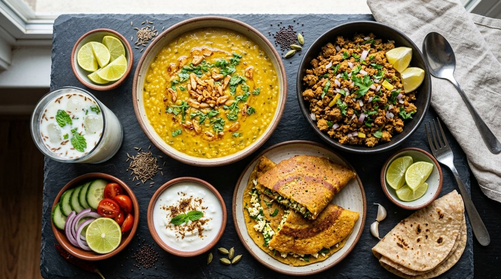

Soya Keema, Thick Dal, PB Cinnamon Shake & Veggie Chilla
Drink plenty of water with a small pinch of pink salt for electrolyte balance.
Add 1 scoop whey powder (25g Protein) into 250ml chilled water in a shaker cup. Shake 20 seconds and drink right after training to halt muscle breakdown.